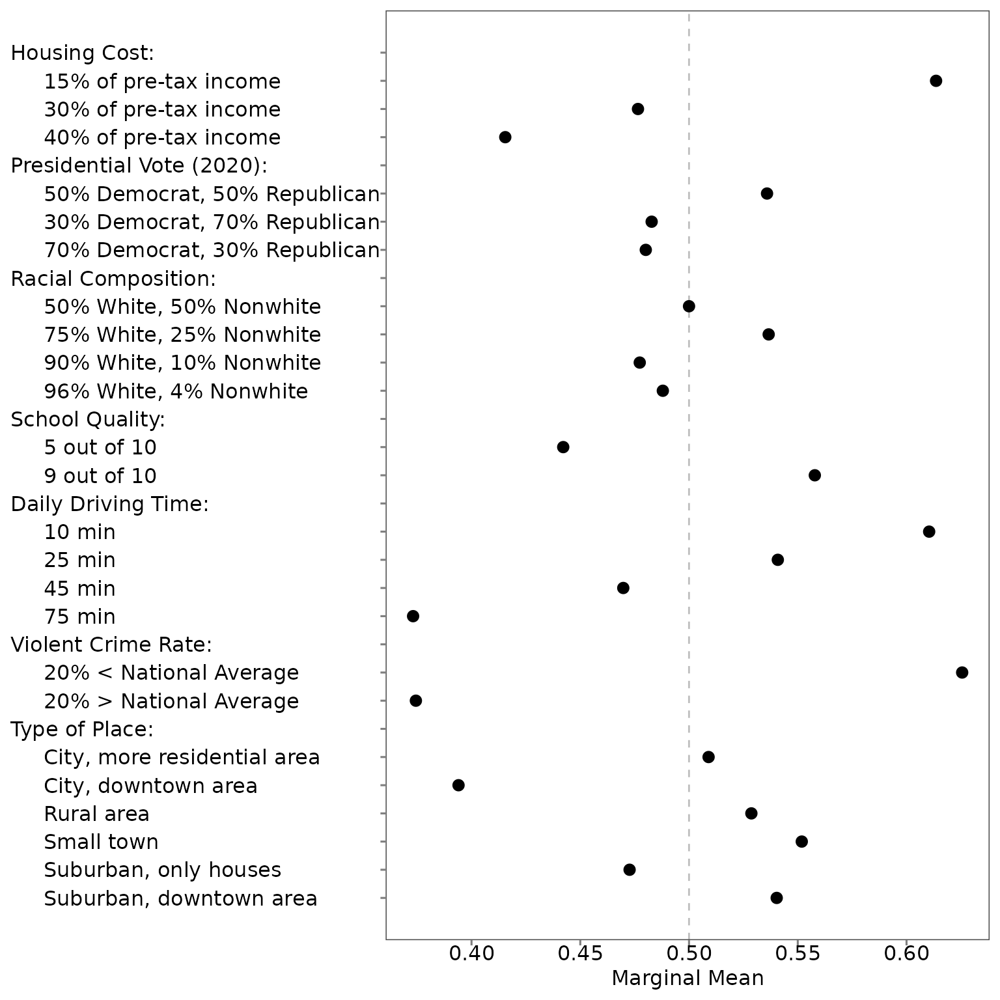

02. Read and wrangle your data for conjoint analysis
02-wrangle.RmdMost of the work in analyzing a conjoint task is correctly specifying
the data and columns. In projoint, the
reshape_projoint function makes it easy!
2.2 Read and wrangle data
With the flipped repeated tasks
Let’s look at a simple example. We expand all those arguments below for clarity:
outcomes1 <- paste0("choice", seq(from = 1, to = 8, by = 1))
outcomes1 <- c(outcomes1, "choice1_repeated_flipped")
out1 <- reshape_projoint(.dataframe = exampleData1,
.idvar = "ResponseId",
.outcomes = outcomes1,
.outcomes_ids = c("A", "B"),
.alphabet = "K",
.repeated = TRUE,
.flipped = TRUE,
.fill = FALSE)Let’s walk through the arguments we have specified.
.dataframe is a data frame, ideally read in from Qualtrics
using read_Qualtrics() but not necessarily. The
.idvar argument, a character, indicates that in
exampleData1, the column ResponseId indicates
unique survey respondents. The .outcomes variable lists all
the columns that are outcomes; the last element in this vector is the
repeated task (if it was conducted). .outcomes_ids
indicates the possible options for an outcome; specifically, it is a
vector of characters with two elements, which are the last characters of
the names of the first and second profiles. For example, it should be
c(“A”, “B”) if the profile names are “Candidate A” and “Candidate B”.
This character vector can be anything, such as c(“1”, “2”), c(“a”, “b”),
etc. If you have multiple tasks in your design, you should use the
same profile names across all these tasks. .alphabet
defaults to “K” if the conjoint survey was conducted using either our
tool or Strezhnev’s Conjoint Survey Design
Tool. The final two arguments, .repeated and
.flipped, again relate to the repeated task. If the
.repeated is set to TRUE, then the last
element of the .outcomes vector is taken to be a repetition
of the first task; .flipped indicates whether the profiles
are in the reversed order.
With the not-flipped repeated tasks
As a slight variation, in some cases the repeated task is
not flipped – that is, in the repeated task, the original
Profile 1 is still Profile 1, rather than flipping positions to Profile
2. Here we specify that by changing .flipped to
FALSE.
outcomes2 <- paste0("choice", seq(from = 1, to = 8, by = 1))
outcomes2 <- c(outcomes2, "choice1_repeated_notflipped")
out2 <- reshape_projoint(.dataframe = exampleData2,
.idvar = "ResponseId",
.outcomes = outcomes2,
.outcomes_ids = c("A", "B"),
.alphabet = "K",
.repeated = TRUE,
.flipped = FALSE,
.fill = FALSE)Without the repeated tasks
Or in cases with no repeated task at all, we set
.repeated to FALSE and .flipped
to NULL:
outcomes3 <- paste0("choice", seq(from = 1, to = 8, by = 1))
out3 <- reshape_projoint(.dataframe = exampleData3,
.idvar = "ResponseId",
.outcomes = outcomes3,
.outcomes_ids = c("A", "B"),
.alphabet = "K",
.repeated = FALSE,
.flipped = NULL,
.fill = FALSE)2.3 The .fill argument
The .fill argument is logical: TRUE if you want to use
information about whether a respondent chose the same profile for the
repeated task and “fill” (using the ‘tidyr’ package) missing values for
the non-repeated tasks, FALSE (otherwise).
You can see the difference by comparing the following two:
fill_FALSE <- reshape_projoint(.dataframe = exampleData1,
.idvar = "ResponseId",
.outcomes = outcomes1,
.outcomes_ids = c("A", "B"),
.alphabet = "K",
.repeated = TRUE,
.flipped = TRUE,
.fill = FALSE)
fill_TRUE <- reshape_projoint(.dataframe = exampleData1,
.idvar = "ResponseId",
.outcomes = outcomes1,
.outcomes_ids = c("A", "B"),
.alphabet = "K",
.repeated = TRUE,
.flipped = TRUE,
.fill = TRUE)We just select the essential variables only. The first data frame
includes the values for the agree variable (whether the
same profile was chosen or not) only for the repeated task. The second
data frame fills the missing values for the other non-repeated
tasks.
selected_vars <- c("id", "task", "profile", "selected", "selected_repeated", "agree")
fill_FALSE@data[selected_vars]## # A tibble: 6,400 × 6
## id task profile selected selected_repeated agree
## <chr> <dbl> <dbl> <dbl> <dbl> <dbl>
## 1 R_00zYHdY1te1Qlrz 1 1 1 1 1
## 2 R_00zYHdY1te1Qlrz 1 2 0 0 1
## 3 R_00zYHdY1te1Qlrz 2 1 1 NA NA
## 4 R_00zYHdY1te1Qlrz 2 2 0 NA NA
## 5 R_00zYHdY1te1Qlrz 3 1 1 NA NA
## 6 R_00zYHdY1te1Qlrz 3 2 0 NA NA
## 7 R_00zYHdY1te1Qlrz 4 1 0 NA NA
## 8 R_00zYHdY1te1Qlrz 4 2 1 NA NA
## 9 R_00zYHdY1te1Qlrz 5 1 1 NA NA
## 10 R_00zYHdY1te1Qlrz 5 2 0 NA NA
## # ℹ 6,390 more rows
fill_TRUE@data[selected_vars]## # A tibble: 6,400 × 6
## id task profile selected selected_repeated agree
## <chr> <dbl> <dbl> <dbl> <dbl> <dbl>
## 1 R_00zYHdY1te1Qlrz 1 1 1 1 1
## 2 R_00zYHdY1te1Qlrz 1 2 0 0 1
## 3 R_00zYHdY1te1Qlrz 2 1 1 NA 1
## 4 R_00zYHdY1te1Qlrz 2 2 0 NA 1
## 5 R_00zYHdY1te1Qlrz 3 1 1 NA 1
## 6 R_00zYHdY1te1Qlrz 3 2 0 NA 1
## 7 R_00zYHdY1te1Qlrz 4 1 0 NA 1
## 8 R_00zYHdY1te1Qlrz 4 2 1 NA 1
## 9 R_00zYHdY1te1Qlrz 5 1 1 NA 1
## 10 R_00zYHdY1te1Qlrz 5 2 0 NA 1
## # ℹ 6,390 more rowsIf the number of respondents is small, if the number of specific
profile pairs of your interest is small, and/or if the number of
specific respondent subgroups you want to study is small, it is worth
changing this option to TRUE. But please note that
.fill = TRUE is based on an assumption that IRR is
independent of information contained in conjoint tables. Although our
empirical tests suggest the validity of this assumption, if you are
unsure about it, it is better to use the default value (FALSE).
2.4 Read your already-wrangled tibble
You may have already read the original data downloaded from
Qualtrics, load it to R, and wrangle data to make a data frame (or
tibble) ready of analysis. In such a case, you you use
make_projoint_data() to save your data as a “projoint_data”
class object necessary to use projoint(). Here is an
example. First, load your data frame.
data <- exampleData1_labelled_tibbleIt should looks like the following. Each row should correspond to each of two profiles in each task for each respondent. The data frame should have columns indicating (1) each respondent’s ID, (2) task number, (3) profile number, and (4) a column recording each response (0, 1) for each task. If your design includes the repeated task, it should also include a column recording the response for the repeated task.
data## # A tibble: 6,400 × 14
## id task profile selected selected_repeated `School Quality`
## <chr> <dbl> <dbl> <dbl> <dbl> <chr>
## 1 R_00zYHdY1te1Qlrz 1 1 1 1 9 out of 10
## 2 R_00zYHdY1te1Qlrz 1 2 0 0 5 out of 10
## 3 R_00zYHdY1te1Qlrz 2 1 1 NA 9 out of 10
## 4 R_00zYHdY1te1Qlrz 2 2 0 NA 9 out of 10
## 5 R_00zYHdY1te1Qlrz 3 1 1 NA 5 out of 10
## 6 R_00zYHdY1te1Qlrz 3 2 0 NA 9 out of 10
## 7 R_00zYHdY1te1Qlrz 4 1 0 NA 5 out of 10
## 8 R_00zYHdY1te1Qlrz 4 2 1 NA 9 out of 10
## 9 R_00zYHdY1te1Qlrz 5 1 1 NA 5 out of 10
## 10 R_00zYHdY1te1Qlrz 5 2 0 NA 5 out of 10
## # ℹ 6,390 more rows
## # ℹ 8 more variables: `Violent Crime Rate (Vs National Rate)` <chr>,
## # `Racial Composition` <chr>, `Housing Cost` <chr>,
## # `Presidential Vote (2020)` <chr>,
## # `Total Daily Driving Time for Commuting and Errands` <chr>,
## # `Type of Place` <chr>, race <fct>, ideology <fct>Next, make a character vector of your attributes.
attributes <- c("School Quality",
"Violent Crime Rate (Vs National Rate)",
"Racial Composition",
"Housing Cost",
"Presidential Vote (2020)",
"Total Daily Driving Time for Commuting and Errands",
"Type of Place")Then, make a suitable object for the next steps using
make_projoint_data(). The default variable names are shown
below. If your data frame uses different names, you can change them.
out4 <- make_projoint_data(.dataframe = data,
.attribute_vars = attributes,
.id_var = "id", # the default name
.task_var = "task", # the default name
.profile_var = "profile", # the default name
.selected_var = "selected", # the default name
.selected_repeated_var = "selected_repeated", # the default is NULL
.fill = TRUE)The output will be the same as the output of fill_FALSE
in the previous section.
out4## An object of class "projoint_data"
## Slot "labels":
## # A tibble: 24 × 4
## attribute_id level level_id attribute
## <chr> <chr> <chr> <chr>
## 1 att1 15% of pre-tax income att1:lev1 Housing Cost
## 2 att1 30% of pre-tax income att1:lev2 Housing Cost
## 3 att1 40% of pre-tax income att1:lev3 Housing Cost
## 4 att2 30% Democrat, 70% Republican att2:lev1 Presidential Vote (2020)
## 5 att2 50% Democrat, 50% Republican att2:lev2 Presidential Vote (2020)
## 6 att2 70% Democrat, 30% Republican att2:lev3 Presidential Vote (2020)
## 7 att3 50% White, 50% Nonwhite att3:lev1 Racial Composition
## 8 att3 75% White, 25% Nonwhite att3:lev2 Racial Composition
## 9 att3 90% White, 10% Nonwhite att3:lev3 Racial Composition
## 10 att3 96% White, 4% Nonwhite att3:lev4 Racial Composition
## # ℹ 14 more rows
##
## Slot "data":
## # A tibble: 6,400 × 13
## id task profile selected selected_repeated agree att4 att7 att3 att1
## <chr> <dbl> <dbl> <dbl> <dbl> <dbl> <chr> <chr> <chr> <chr>
## 1 R_00z… 1 1 1 1 1 att4… att7… att3… att1…
## 2 R_00z… 1 2 0 0 1 att4… att7… att3… att1…
## 3 R_00z… 2 1 1 NA 1 att4… att7… att3… att1…
## 4 R_00z… 2 2 0 NA 1 att4… att7… att3… att1…
## 5 R_00z… 3 1 1 NA 1 att4… att7… att3… att1…
## 6 R_00z… 3 2 0 NA 1 att4… att7… att3… att1…
## 7 R_00z… 4 1 0 NA 1 att4… att7… att3… att1…
## 8 R_00z… 4 2 1 NA 1 att4… att7… att3… att1…
## 9 R_00z… 5 1 1 NA 1 att4… att7… att3… att1…
## 10 R_00z… 5 2 0 NA 1 att4… att7… att3… att1…
## # ℹ 6,390 more rows
## # ℹ 3 more variables: att2 <chr>, att5 <chr>, att6 <chr>2.5 Arrange the order and labels of attributes and levels
The reshaped data have attributes and levels that are sorted
alphabetically. Often, however, you want to reorder the attributes
and/or order the levels of a particular attribute. You may also prefer
not to use the actual labels for attributes and levels used in your
conjoint experiments; for example, for the purpose of presentation, you
may want to make them shorter. This process has been challenging for
applied scholars using other packages. We make this process easy. You
first save the labels using save_labels(). In the CSV file
you save in your local computer, you should revise the column named
order to specify the order of attributes and levels you
want to display in your figure. You can also revise the labels for
attributes and levels in any way you like. But you should not make
any change to the first column named level_id. After
saving the updated CSV file, you should use read_labels()
to read it and save the object suitable for the next step (i.e., use
projoint()).
save_labels(out1, "temp/labels_original.csv")
out1_arranged <- read_labels(out1, "temp/labels_arranged.csv")You can find this data set on GitHub: labels_original.csv and labels_arranged.csv.
The figure based on the original order and labels is in the alphabetical order:

The labels and order of all attribute-levels in the second figure is the same as Figure 2 in Mummolo and Nall (2017).
